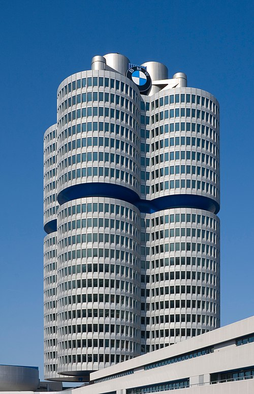
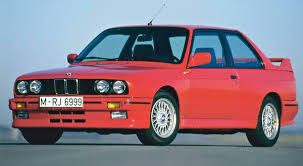
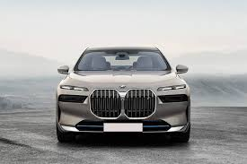

|  |
History
Main article: History of BMW
The Otto Flugmaschinenfabrik was founded in 1910 by Gustav Otto in the Kingdom of Bavaria, which was a state of the German Empire. The firm was reorganized on 7 March 1916 into Bayerische Flugzeugwerke AG.
This company was then renamed to Bayerische Motoren Werke (BMW) in 1922. However, the name BMW dates back to 1913, when a company using that name was founded by Karl Rapp initially as Rapp Motorenwerke.
The name and Rapp Motorenwerke's engine-production assets were transferred to Bayerische Flugzeugwerke in 1922, who adopted the name the same year.[7] BMW's first product was an engine for fighter aircraft of the Luftstreitkrä
It was a straight-six called the BMW IIIa, designed in the spring of 1917 by engineer Max Friz. Following the end of World War I, BMW remained in business by producing motorcycle engines, agricultural equipment,
household items, and railway brakes. The company produced its first motorcycle, the BMW R 32, in 1923.
BMW became an automobile manufacturer in 1928 when it purchased Fahrzeugfabrik Eisenach, which, at the time, built the Austin 7 under licence from Automobilwerk Eisenach, badged as the Dixi.[8] The first car sold as a BMW was a rebadged Dixi called the BMW 3/15, following BMW's acquisition of the car manufacturer Automobilwerk Eisenach. Throughout the 1930s, BMW expanded its range into sports cars and larger luxury cars.[9][10]
Aircraft engines, motorcycles, and automobiles would be BMW's main products until World War II. During the war, BMW concentrated on building the BMW 801 aircraft engine using as many as 40,000 slave laborers.[11] These consisted primarily of prisoners from Nazi concentration camps, most prominently Dachau. Motorcycles remained as a side-line and automobile manufacture ceased altogether.
BMW's factories were heavily bombed during the war and its remaining West German facilities were banned from producing motor vehicles or aircraft after the war. The company survived by making pots, pans, and bicycles. In 1948, BMW restarted motorcycle production. BMW resumed car production in Bavaria in 1952 with the BMW 501 luxury saloon. The range of cars was expanded in 1955, through the production of the cheaper Isetta microcar under licence. Slow sales of luxury cars and small profit margins from microcars, meant BMW was in serious financial trouble and in 1959 the company was nearly taken over by rival Daimler-Benz.[12][13]
|
|

|
BMW E30 M3
The car in the image is the BMW E30 M3, a legendary performance model produced by BMW between 1986 and 1991.
It was developed as a homologation special for Group A Touring Car racing and quickly became one of the most iconic sports cars of its era. Unlike the regular E30 3 Series models, the M3 featured flared wheel arches,
a more aggressive front and rear bumper, and a unique rear wing for improved aerodynamics. Under the hood, it was powered by a high-revving 2.3L to 2.5L inline-four engine from the S14 family, producing between 192 to 235 horsepower depending on the variant, such as the Evolution I, Evolution II, and Sport Evolution. Mated to a 5-speed manual gearbox and rear-wheel drive, the E30 M3 offered razor-sharp handling, making it a favorite among enthusiasts and racers alike. With a top speed of around 235 km/h and a 0–100 km/h time of under 7 seconds, it delivered both performance and driving excitement. Today, the E30 M3 is a highly sought-after collector's car, celebrated for its motorsport pedigree, timeless design, and engaging driving dynamics.
|

|
BMW i7
The car shown in the image is the BMW i7, BMW’s flagship fully electric luxury sedan introduced as part of the new 7 Series lineup. Launched in 2022, the i7 showcases BMW’s vision for the future of premium electric mobility. It features a bold and futuristic design highlighted by its massive illuminated kidney grilles and split headlamp design, making it instantly recognizable. Inside, the i7 offers a blend of cutting-edge technology and unmatched luxury, including a massive 31-inch 8K rear entertainment screen, a curved digital display for the driver, and premium materials throughout the cabin. Powered by dual electric motors and BMW’s xDrive all-wheel-drive system, the i7 delivers impressive performance with over 500 horsepower and a 0–100 km/h time of around 4.7 seconds, depending on the variant. With an estimated range of up to 625 km (under WLTP standards), the i7 combines sustainable driving with the comfort and prestige expected from BMW’s top-tier models. It also features advanced driver assistance systems and supports Level 3 autonomous driving in some markets. The i7 represents BMW’s commitment to innovation, blending luxury, technology, and electrification in one extraordinary package.
|